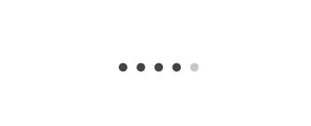
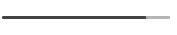
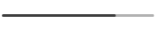
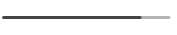

FRANCESCA RONCARI
Born in Luino on 8 February 1992
Passion:
// Photography
// Graphic
// Animals
// Travel
EDUCATION
// 2006-2011 Traditional Scientific High School
Broad and flexible preparation in the humanities
and life sciences.
// 2011-2015 IED, Milan
Visual Communication & Graphic Design
Web and interaction design, strategy design,
photography, corporate design, packaging design,
editorial design, motion design.
// 2015-2016 SPD, Milan
Master Web & Digital Design
Skills of Interaction Design, UI, UX, Service Design,
Digital Art Direction, Digital Typography, Front End,
Design tools, Communication Strategy, E-Commerce,
Storytelling and SEO.
SKILLS
Adobe InDesign
Illustrator
Photoshop
After Effects
Adobe Premiere
Cinema 4D
Sketch
Balsamiq
HTML/CSS
Dreamweaver
PROFESSIONAL EXPERIENCE
Carmi & Ubertis // Stage as Graphic Designer
Branding and Design Company specializes
in the creation and brand management
LANGUAGE
Italian mother language
English B2
PERSONAL
Organization
Creativity
Teamwork
Communication
